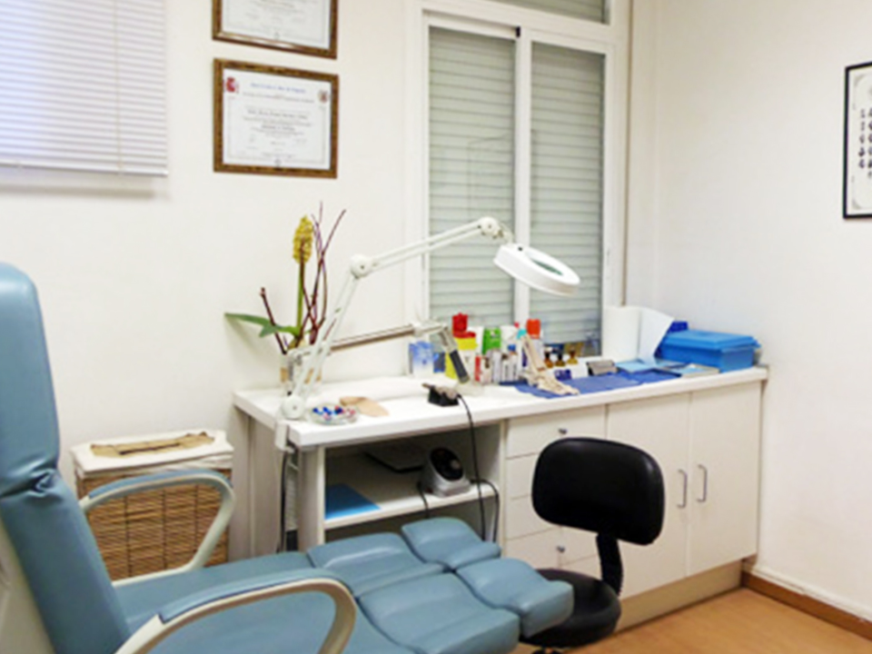

<section class="container-fluid">
    <div class="row">
        <div class="col-xs-12 col-lg-6 notPadding">
            
        </div>
        <div class="col-xs-12 col-lg-6 dFlexCenter">
            <div>
                <h2>Nosotros</h2>
                <h5>La clínica está autorizada por la Consejería 
                    de Sanidad de la Comunidad Autónoma de Madrid, 
                    inscrita en el registro con el número <span>CS11512</span>.
                </h5>
                <a href="#" class="btn">
                    <p>Saber más</p> 
                </a>
            </div>
        </div>
    </div>
    <div class="row backgroundWhite">
        <div class="col-xs-12 col-lg-6 dFlexCenter">
            <div>
                <h2>Horario</h2>
                <h5 class="bold">Lunes a Virenes</h5>
                <h5>09.30 - 14.00 y 16.00 - 20.00</h5>
                <h5 class="bold">Sábados</h5>
                <h5>09.30 - 14.00</h5>
                <address>Paseo de las Delicicas, 124, Bajo - Madrid</address>
                <a href="mailto:podologoslegazpi@hotmail.com">podologoslegazpi@hotmail.com</a>
                <br>
                <a href="tel:+34914730661"class="btn btn-telefono">Pide tu cita</a>
            </div>
        </div>
        <div class="col-xs-12 col-lg-6 notPadding">
            <!--  -->
            <iframe src="https://www.google.com/maps/embed?pb=!1m18!1m12!1m3!1d3038.6867527899926!2d-3.697122384146087!3d40.393634679367665!2m3!1f0!2f0!3f0!3m2!1i1024!2i768!4f13.1!3m3!1m2!1s0xd422637ce9e1521%3A0x497b4990c20061e0!2sPaseo%20de%20las%20Delicias%2C%20124%2C%2028045%20Madrid!5e0!3m2!1ses!2ses!4v1570901770936!5m2!1ses!2ses" width="100%" height="100%" frameborder="0" style="border:0;" allowfullscreen=""></iframe>
        </div>
    </div>
</section>
